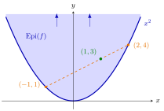

Epigraph¶
Definition¶
Let and let . The epigraph of is the subset of
It consists of the points of the graph of and all points above them. When is a convex set, is a convex function if and only if is a convex set.
Interpretation¶
The epigraph turns a function into a set: everything on or above its graph. This lets every statement about convex sets be used for convex functions, and conversely.

The figure is Example 1: the shaded region is for , which continues upward without bound. The points and lie on the graph, and the segment between them stays in the shaded region; its point with weights and is , and . That every such segment stays inside is exactly the convexity of .
This equivalence is the definition of convexity read geometrically. Take two points and of ; their combination with weights lies above the graph exactly when , and taking gives the chord inequality. The graph itself is generally not convex: the epigraph is the convex set, and the graph is its lower boundary.
A second result goes the other way. Starting from a convex set , take for each the lowest height of above it, the infimum of the vertical slice. The result is a convex function, provided every slice is bounded below, so that the infimum is a real number. For this recovers .
The epigraph makes several facts visible at once. A jump at an interior point of cuts a notch into the epigraph (Example 2 below), which is why convex functions are continuous there. The epigraph of is , so a maximum of convex functions is convex. A horizontal slice at height is a sublevel set.
A convex epigraph says nothing about strictness or smoothness: the epigraph of the norm is a convex cone-shaped solid with straight edges (Example 3 below). The hypograph plays the same role for concave functions.
Key Results¶
- Let be convex and . Then is convex if and only if is convex.
- Let be convex, let be its projection onto , and suppose for every . Then defines a convex function on .
- ; with the first result and the intersection of convex sets this shows that a maximum of finitely many convex functions is convex.
- For every , the sublevel set equals .
- A convex epigraph does not imply strict convexity: is convex although the norm is not strictly convex (Example 3 below).
Examples¶
1. The parabola. For on , is the region on and above the parabola. Since is convex, the epigraph is convex. For instance, and lie in it, and the combination with weights and is , which also lies in it because . The same reasoning applies to on , whose epigraph is convex because is convex.
2. A nonconvex epigraph. Let with for and for . The points and lie in , since and . Their midpoint does not, because . So is not convex, and by the first Key Result is not convex. The cause is the jump at the interior point , where is not continuous.
3. The epigraph of the norm. For on , is a solid cone with apex at the origin, like an upright ice-cream cone. It is convex because the norm is a convex function, by the triangle inequality, and a convex function has a convex epigraph. Its boundary contains the half-lines , which are the straight pieces of the graph that stop the norm from being strictly convex.
4. A convex function from a disc. Let . Its projection is , and the lowest point of above has height . So, by the second Key Result, , the lower semicircle, is convex on . For the open disc the formula gives the same function on , even though the infimum is no longer attained. For the half-plane every slice is unbounded below, the hypothesis fails, and no real-valued function is produced.
Prerequisites¶
Related Concepts¶
- Hypograph
- Strictly Convex Function
- Sublevel Sets of Convex Functions
- Operations Preserving Convexity of Functions
- Continuity of Convex Functions
- Intersection and Sum of Convex Sets
- Polyhedral Convex Set
Sources¶
- Math VI: Convexity and Optimization · Week 1
- H. E. Nusse and M. Dienstknecht, Math VI: Convexity and Optimization, lecture notes 2026–2027, Section 1.2
Aliases: Epi(f), epigraph of a function, epigraph of a convex function, region above the graph Keywords: \operatorname{Epi}(f)={(\boldsymbol{x},y)\in\mathbb{R}^n\times\mathbb{R}\colon \boldsymbol{x}\in D,\ y\geq f(\boldsymbol{x})}, f\text{ convex}\iff\operatorname{Epi}(f)\text{ convex}, f(\boldsymbol{x})=\inf{y\in\mathbb{R}\colon(\boldsymbol{x},y)\in V}, set on or above the graph, convex function from a convex set Symbols: alpha, element of, infinity, intersection, lambda, real numbers, square root, subset
Last updated: 5 November 2026 12:47
EpigraphContinuity of Convex FunctionsHypographConvex Set in R^nConvex and Concave Functions on R^nGraph of a FunctionInfimumStrictly Convex FunctionSublevel Sets of Convex FunctionsOperations Preserving Convexity of FunctionsIntersection and Sum of Convex SetsPolyhedral Convex Set